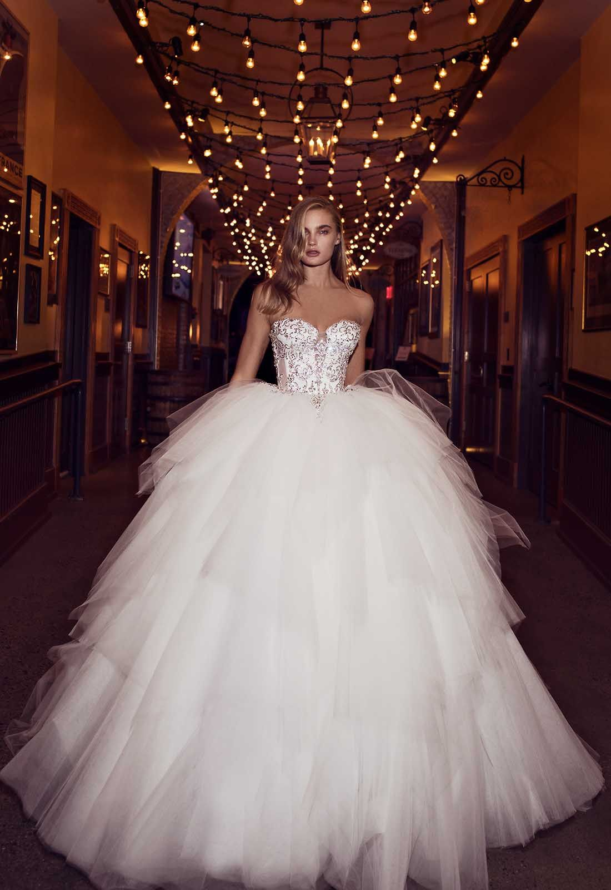

Say Yes To The Dress Bridal Salon®
57 Jeffers Street, Newbridge, Co Kildare

Pnina Tornai is a leading international bridal and eveningwear designer. Pnina Tornai’s collection features her signature corset design inspired by the wedding dresses of her homeland, Israel. Pnina has been sketching since she was a little girl and feels that wedding dress design is what she was born to do.
Pnina Tornai’s gowns are handmade from the finest fabrics imported from Europe and hand sewn in accordance with the principle of Haute Couture. Her bridal collection here at Say yes to the Dress Bridal includes classic style dresses with clean lines and details to sophisticated, hand-embroidered ball gowns. Swarovski crystals and precious stones adorn her bridal creations and Pnina brings a new and fresh design approach to bridal.
Her fabrics are classic, yet sensual and unique and her details reflect her individual sense of style, glamour and beauty.
